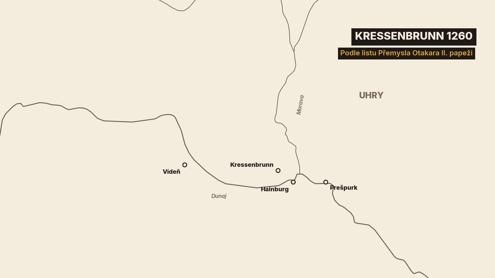
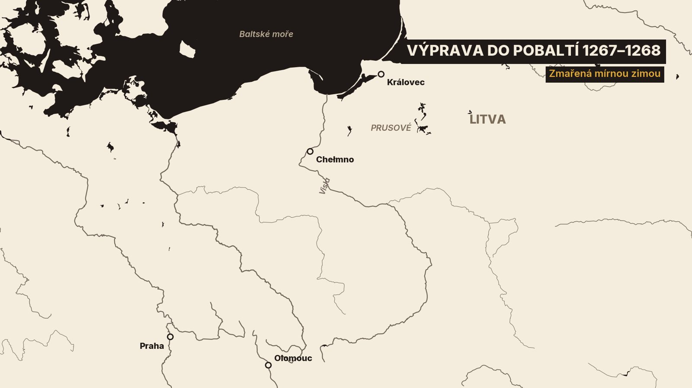
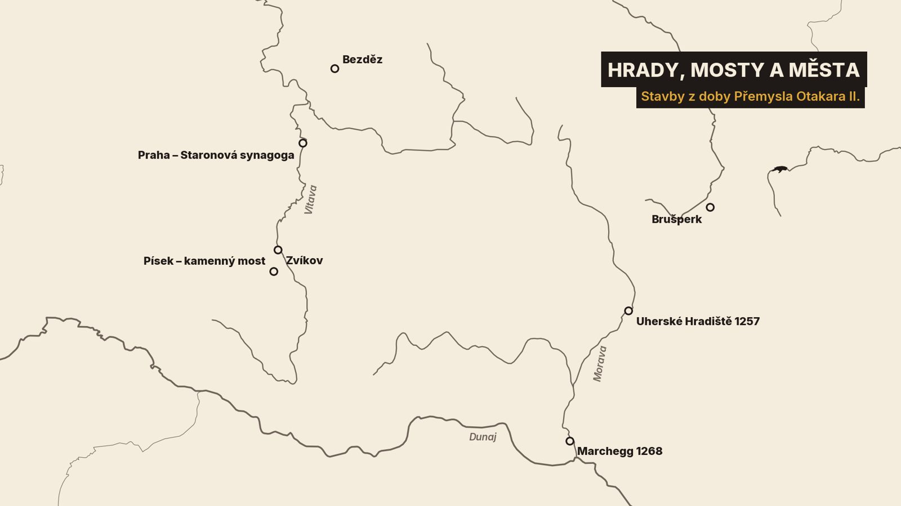
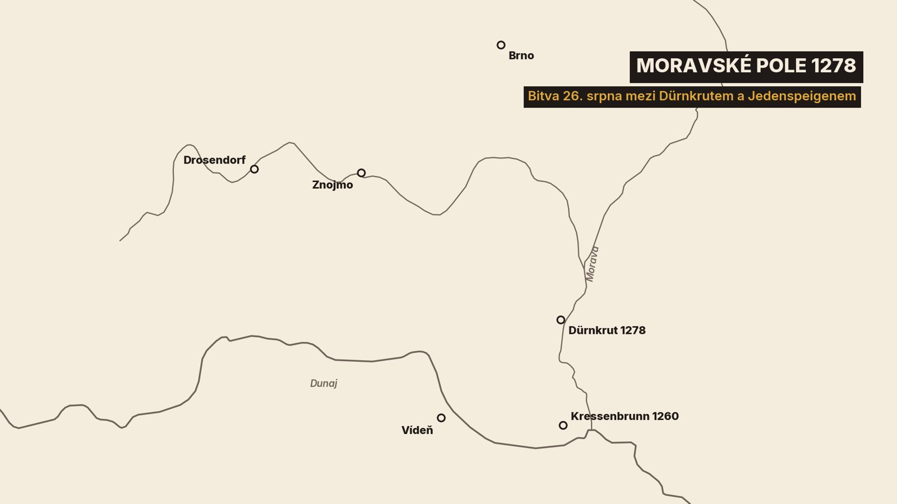

0. Král beze zbroje
Srpen roku 1278. Na Moravském poli za Dunajem stojí proti sobě dvě vojska. Večer před bitvou dostane český král dopisy a vzkazy. Posílají mu je šlechtici z nepřátelského tábora. A varují ho, že ho zítra zradí jeho vlastní páni.[16]
Král je svolá do svého stanu. Postaví se před ně beze zbroje. „Hle, stojím před vámi neozbrojený.“ Jestli je mezi nimi zrádce, ať ho raději zabije hned. Jeho samotného. Než aby zítra umřely tisíce lidí.[16]
Hle, stojím před vámi neozbrojený… Lépe by bylo, aby mě zabil teď samotného, než aby zítra se mnou v bitvě zemřely mnohé tisíce lidí.
Páni přísahají věrnost. {{pauza}} Druhý den ho mnozí z nich opustí.[16]
Tak to aspoň zapsal bavorský letopisec. Ten král se jmenoval Přemysl Otakar II.. Do večera příštího dne byl mrtvý.[16][4]
1. Král beze zbroje
O Otakarovi jsme už vyprávěli v díle Král železný a zlatý. Tam jsme jeho život prošli za deset minut. Dnes ho budeme sledovat zblízka.
Uvidíme mladšího syna, který neměl být králem, a přesto vládl od Krušných hor až k Jadranu. Uvidíme, jak o všechno přišel, a to kvůli muži, kterým pohrdal. A nakonec, proč jeho smrt každý kronikář vypráví jinak.
Budou nás provázet právě kronikáři. Většinu z nich budeme jmenovat podle města nebo kláštera, kde psali: vídeňský, salcburský, bavorský. Většina z nich psala mimo Čechy. A často si navzájem odporují. Kde se neshodnou, řekneme vám to.
2. Chlapec, který neměl být králem
Abychom pochopili, jak se ten král ocitl na Moravském poli, musíme se vrátit o víc než třicet let. Přemysl se narodil roku 1232, možná o rok později, jako mladší syn krále Václava I.. Králem se stát neměl, před ním byl starší bratr Vladislav.[4]
Jenže když bylo Přemyslovi asi patnáct, Vladislav zemřel. Přemysl po něm dostal Moravu a stal se markrabětem moravským, tedy pánem Moravy pod vládou svého otce.[4]
Na jeho markraběcí pečeti se poprvé zřetelně objevuje dvouocasý lev, kterého známe dodnes.[44]
O rok později se ale postavil proti vlastnímu otci. Prohrál a otec ho nechal krátce uvěznit. Pak se ale usmířili a Moravu mu nechal.[4]
Mezitím se Přemyslovi otevřela cesta na jih. Rakouští vévodové z rodu Babenberků vymřeli po meči, tedy v mužské linii, a Rakousy zůstaly bez pána.[4]
Když bylo Přemyslovi asi devatenáct, zvolili si ho rakouští páni za svého pána. O rok později si vzal Markétu z rodu Babenberků. Byla to vdova po římském králi, o hodně starší než on.[4]
A rok nato zemřel jeho otec. Přemysl, kterému budeme dál říkat Otakar, se stal českým králem.[4]
Zrekapitulujme si to, protože to šlo rychle. Za pouhých šest let se z mladšího syna bez nároku na trůn stal pán Moravy, pán Rakous a nakonec český král.[4]
O Štýrsko, zemi jižně od Rakous, ale stál i uherský král Béla IV.. Spor skončil na jaře 1254 předběžným mírem v Budíně. Sever Štýrska připadl Otakarovi, zbytek Uhrám.[4][11]
Na české straně ten mír vyjednával olomoucký biskup Bruno. To jméno si zapamatujte. Bruno bude u skoro všech velkých rozhodnutí tohoto krále. {{pauza}}[8][11]
Otakarovi je teprve asi dvaadvacet. A vládne Čechům, Moravě, Rakousům i severu Štýrska.[4]
3. Biskup po boku krále
Kdo byl ten biskup? Německý životopisný slovník ho nazývá vedoucím státníkem přemyslovského rodu.[8]
Bruno byl o generaci starší než král. Narodil se kolem roku 1205 v severním Německu jako syn hraběte z Holštýnska. Jeho rod se jmenoval podle hradu Schaumburg. Olomouckým biskupem ho jmenoval přímo papež.[8]
Pro Otakara se stal pravou rukou. Vyjednával mír, jezdil za papežem a osm let za krále spravoval Štýrsko.[8]
A doma měnil krajinu. Na své panství zval osadníky i rytíře. Rytíři dostávali půdu jako léno, tedy do užívání, a za to museli biskupovi sloužit se zbraní.[8]
Jak to vypadalo v praxi, ukazuje jedna listina. Bruno koupil od jednoho německého hraběte kraj mezi řekami Ostravicí a Odrou. Polovinu mu pak dal zpátky jako léno.[11][61]
Smlouva myslela i na budoucnost. Med z lesů se měl dělit napůl. A stejně tak zlato, stříbro nebo sůl, kdyby se tam někdy našly.[11]
Na biskupově panství vyrostla nová města. Jedno nese jeho jméno: Brušperk, německy Brunsberg, tedy Brunův vrch.[10]
Další, třeba Příbor nebo Frenštát, vznikla na zeleném drnu, tedy tam, kde předtím nic nestálo.[62]
Kolik toho bylo? Podle staršího německého životopisu vzniklo z Brunova podnětu asi 200 nových vesnic a kolem třiceti měst.[8]
Co to znamenalo? Podle historiků Bruno přenesl na Moravu německé lenní právo. A podle německého životopisu z jeho práce vychází dodnes podoba krajiny na severovýchodě Moravy.[8]
Až pojedete přes Brušperk, vzpomeňte si: to jméno pořád nese Brunův vrch. A Bruno bude u Otakara i dál, u míru s Uhry i ve chvíli největšího ponížení.[11][22]
4. Bitva ve vedru
Mír z Budína ale vydržel jen pár let. V létě 1260, Otakarovi bylo asi osmadvacet, stála česká a uherská vojska znovu proti sobě.[4][16]

Tábory dělila řeka Morava, kousek od Vídně. Na druhém břehu stál Štěpán, syn krále Bély, a bránil Čechům v přechodu řeky.[16][1]
Co se stalo dál, víme od Hermanna, kronikáře z bavorského kláštera Niederaltaich. Psal v té době, je to tedy svědectví současníka. Jeho klášter vedl letopisy i po jeho smrti. A právě z nich pochází scéna ve stanu, kterou jste slyšeli na začátku. Tomu pozdějšímu pisateli budeme říkat prostě bavorský letopisec.[16]
Několik dní stála vojska každé na svém břehu. Pak Otakar zvedl tábor a táhl podél řeky proti proudu. Podle Hermanna kvůli koním a lidem.[16]
Na druhém břehu to ale Štěpán pochopil po svém: Češi prchají. A pustil se za nimi. {{pauza}} Byla to chyba. U vesnice Kressenbrunn se vojska střetla. Uhři prohráli, Štěpán byl raněn. A mnoho Uhrů se při útěku utopilo v řece.[16]
Bylo to v pondělí, na den svaté Markéty, tedy 12. července.[16]
A bylo strašné vedro. I na vítězné straně podle Hermanna mnoho mužů zemřelo pod zbrojí nesmírným horkem. Nezabilo je železo, ale horko pod železem. Pozdější veršovaná kronika k tomu dodává, že prach byl tak hustý, že nebylo vidět slunce.[16][3]
Mnozí zahynuli železem a pod zbrojí nesmírným horkem.
Otakar sám poslal papeži zprávu o vítězství. A vypráví ji jinak než Hermann. Podle krále to byli Uhři, kdo přešel řeku a porušil příměří. Řeka Morava pak byla pro prchající „jako moře červené Egypťanům“.[11]
Kdo má pravdu? Nevíme. Hermann psal v bavorském klášteře, Otakar jako vítěz a ve vlastní věci. Takové dvojí svědectví nás bude provázet celým dílem.[16][11]
Rýmovaná kronika, dlouhá veršovaná kronika z Rakous sepsaná o čtyřicet a víc let později, přidává barvitou historku. Uslyšíte o ní ještě mnohokrát. Píše barvitě, ale pozdě, a tak ji budeme brát s rezervou. Zajatý pán z kočovníků, kterého nazývá Tatarem, prý nabízel za život tolik koní, kolik má vlasů na hlavě. Otakar ho dal pověsit na strom. Žádné bohatství prý nesmí zviklat mysl tak bohatého krále.[3]
S bitvou se pojí i legenda. Otakar prý před ní slíbil, že založí klášter. Mniši z Rakous pak opravdu přišli na jih Čech a klášter dostal jméno podle ostatku, trnu z Kristovy koruny. Dnes ho známe jako Zlatou Korunu.[48]
Co vítězství přineslo? Béla se Štýrska vzdal. Na jaře 1261 uzavřeli oba králové mír ve Vídni a za Otakara se zaručili tři biskupové. Jedním z nich byl Bruno. {{pauza}}[17][11]
Otakarovi je asi osmadvacet. Porazil Uhry, Štýrsko je jeho a za mír ručí i Bruno. A ještě jednu věc si zapamatujte: tu řeku. Moravu. K jejím břehům se Otakar za osmnáct let vrátí.[4][11]
5. Královna bez dětí
Ve válce Otakar vyhrál. Doma mu ale chybělo něco jiného: dědic. Markéta byla o hodně starší a děti spolu neměli.[4][2]
Proto se král rozhodl pro rozvod. V říjnu 1261 odjela královna do Rakous. Podle Zbraslavské kroniky biskupové manželství rozloučili „před vším lidem“ a se souhlasem papeže. Ve skutečnosti ho papež schválil až dodatečně.[2][38]
Jak to šlo? Podle historiků rozhodl slib čistoty, který Markéta kdysi složila. Po smrti prvního manžela totiž vstoupila do kláštera. Její druhý sňatek proto mohl být neplatný.[38]
Ještě týž měsíc si Otakar vzal Kunhutu, vnučku svého soupeře Bély. Její otec byl ruský kníže ve službách uherského krále. Kunhutu si zapamatujte. Ještě promluví, a ne vlídně.[2][38]
S Kunhutou měl Otakar podle Zbraslavské kroniky dvě dcery a tři syny. Dva synové ale zemřeli v dětství. Dědic trůnu, Václav, se narodil až skoro deset let po svatbě.[2][4]
Syna přitom Otakar měl už dřív. Jmenoval se Mikuláš a narodil se kolem roku 1255. Jeho matkou nebyla královna.[38]
Kronikář František Pražský, který psal skoro o sto let později, k tomu vypráví historku. Královna prý z bezdětnosti vinila krále. A král jí odpověděl: „Dej mi jednu ze svých dívek a do roka s ní zplodím dítě.“ Je to ale pozdní historka, ne zapsaný rozhovor.[2][38]
Už roku 1260, ještě před rozvodem, uznal papež Mikuláše a jeho dvě sestry za řádné děti, takže mohli dostávat hodnosti a panství.[38][4]
Jedno ale zůstalo zavřené. Na českou korunu nárok neměli. {{pauza}}[38]
Mikuláš se stal pánem Opavska a od něj počítáme rod opavských Přemyslovců. Na Moravském poli bude u toho.[38]
Otakarovi je skoro třicet. Má novou královnu, mír s Uhry a dědice trůnu zatím ne.
6. Krále porazila obleva
Na jihu měl Otakar mír. Jeho pohled se teď stočil na sever, k pohanům u Baltského moře.[11][12]
Ten kraj znal. Už jako mladý král tam vedl křížovou výpravu proti pohanským Prusům. Podle historiků po něm dostal jméno Královec.[1][4]
Dál na východě žili pohanští Litevci. A tady papežové Otakarovi slíbili hodně. Co v Litvě dobude, bude navždy jeho. A víc: smí tam znovu „vztyčit královský trůn“ a posadit na něj někoho věrného církvi. Znovu proto, že Litva už krále měla, korunovaného s papežovým svolením. Jenže ho zavraždili.[11]
A Otakar chtěl víc. Požádal, aby se z Olomouce stalo arcibiskupství, tedy hlavní biskupství, pod které by patřila nová biskupství na dobytém severu.[12]
Svou žádost zdůvodnil zajímavě. V jeho zemích žádné arcibiskupství nebylo. „Ačkoli se říká, že kdysi na Moravě takové sídlo bylo.“[12]
…ačkoli se říká, že kdysi na Moravě takové sídlo bylo.
Mohl myslet na Metoděje, arcibiskupa z doby Velké Moravy. Papež ale odmítl. Olomouc patřila pod arcibiskupa v Mohuči a tomu ji vzít nechtěl. Slíbil jen, že o tom znovu uváží, až Otakar dobude dost země.[12]
Bruno měl jet s ním. Na konci listopadu 1267 si sepsal závěť, výslovně proto, že se chystal do Pruska.[11]
Před Vánoci byl Otakar ještě v Praze. Začátkem ledna už stál s vojskem v Chełmnu na Visle. Bylo mu asi pětatřicet.[13]

Jenže do Pruska se dalo táhnout jen v zimě. Podle Rýmované kroniky se muselo přijít, dokud mrzne. Bažiny musely zamrznout, jinak se jimi neprojde. A když led povolí, vojsko musí odtáhnout.[3]
Zastavme se u toho na chvíli. Na jihu Otakar porazil uherské vojsko. Tady proti němu nemuselo stát žádné. Stačilo počasí.
A ta zima byla mírná. Rakouský letopisec napsal, že král nic hodného nevykonal, „protože počasí bylo příliš mírné“. Řádový kronikář v Prusku to vidí stejně. Tentokrát se kronikáři výjimečně shodnou.[13]
Rýmovaná kronika to říká obrazem. Král stál u Chełmna na Visle a „moře mu přišlo naproti“. Básník tím nejspíš myslí tající led a vodu všude kolem.[3]
Proto se vojsko obrátilo. Král nařídil, aby Rakušané a Štýrové byli za Vislou ještě před půlnocí. Cestu po ledu hledali za tmy, se světly. Můžeme si jen představovat, jaké to bylo: vést koně přes řeku po ledu, který už povoluje.[3]
V polovině února byl král zpátky. Celá výprava trvala zhruba dva měsíce. {{pauza}}[13]
A s ní skončily i velké plány. Litevský trůn pro věrného muže, nová biskupství na severu, Olomouc jako arcibiskupství. To všechno záviselo na tom, jestli Otakar na severu něco dobude. Nedobyl nic. Litevský trůn ani olomoucké arcibiskupství nikdy nevznikly.[11][12][8][4]
Doma ale mezitím rostlo něco, co vydrželo dodnes.
7. Hrady, mosty a města
Co po Otakarovi zůstalo doma? Hlavně kámen. Hrady, mosty, kláštery a města.
Severně od Prahy dal postavit hrad Bezděz. Stavět se začalo nejspíš v šedesátých letech, hlavní práce ale probíhaly v sedmdesátých.[49][51]
Kdy přesně? Pomáhají letokruhy. Strom na trám ve stropě královského paláce pokáceli podle dendrochronologie roku 1270 nebo o rok později. Tedy v době, kdy byl Otakar na vrcholu moci.[52][51]
Hradní kaple na Bezdězu je podle odborníků vrcholem přemyslovských hradních kaplí.[51]
Pro Otakarovu rodinu se ale hrad stal pastí. O osm let později, už po králově smrti, sem v lednové noci odvezli jeho vdovu a malého Václava jako vězně.[49]
Na jihu Čech přestavěl Otakar hrad Zvíkov nad soutokem Vltavy a Otavy. Královský palác se stavěl asi dvacet let a uzavřela ho kaple svatého Václava.[53]
Na podlaze kaple jsou dlaždice s německými nápisy. Na jedné mluví lev: „Lev jmenuji se, mne nosí v štítu král země české.“[53]
Lev jmenuji se, mne nosí v štítu král země české.
Kousek odtud, v Písku, stojí kamenný most přes Otavu. Podle kamenických značek ho postavila stejná královská huť, která pracovala na Zvíkově. Podle Národního památkového ústavu je to nejstarší velký dochovaný most v Česku.[55]
A Otakar zakládal města. Podle německého životopisu jich založil nebo povýšil přes padesát.[4]

Jedním z nich je Uherské Hradiště. Archeologové tam našli zvláštní věc: první osadníci si postavili chlebovou pec do zbytků zdi z doby Velké Moravy, tedy do stavby o čtyři sta let starší.[64]
Jiné město založil na řece Moravě, už v Rakousích na hranici s Uhrami. Jmenuje se Marchegg a je to největší plánovaně založené město Dolních Rakous. Po Otakarově smrti se ale dál nerozvíjelo. To jméno si zapamatujte. Otakar se do Marcheggu ještě jednou vrátí. Ale už ne živý.[66]
8. Král a Židé
Ve městech žili i Židé. Komu patřila jejich ochrana? Podle Otakarova privilegia králi. Židé v něm byli služebníci královské komory, tedy přímo krále. Kdo jim ublížil, ublížil králi.[15][14]
Kdy přesně privilegium vzniklo, se historici přou: starší edice uvádějí rok 1254, novější literatura o osm let později. Sám Otakar to později řekl jen obecně: vydal ho prý „v čase svého mládí“.[14][15][12]
Privilegium tvrdě trestalo násilí. Za zpustošení židovského hřbitova hrozila smrt. A kdo házel kamením na synagogu, musel zaplatit pokutu.[14]
A zakazovalo jednu nebezpečnou pomluvu. Že Židé užívají lidskou krev. Král ji „podle ustanovení papeže“ co nejpřísněji zakázal.[14]
…aby vůbec jednotliví židé usazení na našem panství nebyli viněni, že používají lidské krve, poněvadž se podle přikázání Zákona všichni židé naprosto zdržují od vší krve.
Ne všichni u dvora to ale viděli stejně. Ani Otakarův nejbližší rádce, biskup Bruno. Ve zprávě papeži si stěžoval, že Židé berou lichvu a stávají se celníky a mincíři. Král a jeho biskup tu tedy stojí každý jinde.[9]
Ve stejné době vyrostla v Praze Staronová synagoga. Odborníci ji kladou zhruba do sedmdesátých let třináctého století. Její kamennou výzdobu spojuje literatura nejčastěji s královskou hutí, s kameníky, kteří pracovali i na Anežském klášteře.[56][58]
Pamatujete na trám z Bezdězu, který prozradily letokruhy? Tady to nejde. Krov synagogy je až z devatenáctého století. Archeologové ale našli v zemi pod přístavkem synagogy, ve vrstvě porušené její stavbou, keramiku patrně z doby kolem poloviny třináctého století.[56][57]
Je to nejstarší dochovaná dvoulodní středověká synagoga. A podle Židovského muzea nejstarší dosud užívaná synagoga v Evropě. {{pauza}}[56][59]
9. Od Krušných hor k Jadranu
Zatímco se stavělo, rostla i Otakarova říše. Na vrcholu sahala podle německého historika od Krušných hor a Krkonoš až k Jadranu. Od hor na severu až k moři na jihu.[4]
Jak ji poskládal? Po kouscích. Na západě Otakar využil toho, že byl zástupcem říše v Německu, a obsadil Cheb.[4]
Další kus získal dohodou. V prosinci 1268 přijel do Poděbrad korutanský vévoda Oldřich, Otakarův bratranec. Neměl děti a ustanovil Otakara svým jediným dědicem. Podle staršího životopisu to udělal za zády vlastního bratra.[25][26]
Za necelý rok Oldřich zemřel. Otakar obsadil Korutany a dobyl Lublaň. Salcburský letopisec poznamenal, že si Korutany přisvojil „neprávem“.[17]
Po další válce s Uhry uznali Uhři Otakarovu vládu v Korutanech a Kraňsku. A furlanští páni v severní Itálii si ho zvolili za generálního kapitána. Byl i pánem přístavu Naonis, dnešního Pordenone. Zapamatujte si ten přístav. Uvidíme ho znovu tam, kde byste ho nečekali: v Otakarově hrobě.[4][26][42][17]

Na pečeti, kterou užíval od roku 1270, jede král na koni. Pokrývka koně nese znaky Korutan, Moravy, Štýrska a Kraňska. Pečeť je mapa jeho moci.[44]
Jak takovou říši držel? Často tvrdě. Zapamatujte si dvě jména. Na Moravském poli se vrátí.
První jméno. Česká Dalimilova kronika tvrdí, že Otakar dal upálit ve věži pána Beneše. Podle vydavatele kroniky to byl bratr pána jménem Milota z Dědic. Zapamatujte si Milotu.[29]
Druhé jméno. Štýrského šlechtice Siegfrieda z Merenbergu dal Otakar podle Rýmované kroniky zajmout a odvézt do Prahy. Tam ho nechal vláčet za koněm a pověsit hlavou dolů. Siegfried z Merenbergu. I to jméno si zapamatujte.[3]
Vídeňský letopisec vypočítal i další krutosti. Šlechtice prý Otakar vláčel za koňskými ocasy, věšel v řetězech a upaloval ve věžích. Psal to ale nepřítel.[17]
Otakarovi je asi čtyřicet a jeho říše je na vrcholu. Nepřátele má ale i mezi vlastními pány. {{pauza}}[4][17]
Zastavme se tu a ohlédněme se. Mladší syn, který neměl být králem, teď vládne od Krušných hor k Jadranu. Porazil Uhry u řeky Moravy. Staví hrady, mosty a města. Po boku má biskupa Bruna. Jen na severu ho porazila obleva.
Tím končí první polovina příběhu, vzestup. Druhá je o tom, jak tohle všechno ztratí. A začne to volbou jednoho hraběte.
10. Jakýsi méně způsobilý hrabě
Pak přišla rána odjinud. Roku 1273 zvolili kurfiřti, tedy knížata, která volila krále, nového římského krále. Nebyl to říšský kníže, ale hrabě: Rudolf Habsburský. Otakarovi poslové ve Frankfurtu marně protestovali.[21][4][9]
Otakar si stěžoval papeži. Kurfiřti prý zvolili „jakéhosi méně způsobilého hraběte“.[21]
…zvolili jakéhosi méně způsobilého hraběte.
Říše, které kdysi sloužil Arab i Ind, teď podle dopisu připadla lidem, které tíží břemeno chudoby. Řečeno dnešními slovy: Rudolf je podle Otakara chudý hrabě, který na korunu nemá. Ve skutečnosti chudý nebyl, měl vyšší příjmy než někteří kurfiřti. Ale zapamatujte si to. Bohatství a chudoba se v tomhle příběhu ještě vrátí.[21][24]
Bruno psal papeži ve stejném duchu. Kurfiřti podle něj volí krále, které by měli raději pod sebou než nad sebou.[9]
A pak přišel jeho hlavní argument. Na východě hrozí Kumáni, Rusové a Tataři. Obrana křesťanské víry v těch krajích proto připadá „jedině království českému“.[9]
…jedině království českému, jak se zdá, připadá v našich končinách obrana křesťanské víry.
Nepomohlo to. Papež Rudolfa uznal. {{pauza}} Ani dopisy krále, ani dopisy jeho biskupa nic nezměnily.[24]
Rudolf zatím jednal. Na sněmu knížat se usnesli, že kdo do roka a do dne nepožádá nového krále o svá léna, ztratí je. Pamatujete na léno z Brunova panství? Dostaneš půdu od pána, a za to mu sloužíš. Teď šlo o totéž, jen o celé země. Usnesení mířilo hlavně na Otakara. Otakar nepřišel.[24][17]
Na další sněm, do Augsburgu, poslal místo sebe jednoho ze štýrských biskupů. Ten napadl Rudolfovu volbu tak prudce, že ho před rozzlobenými knížaty musel chránit sám Rudolf.[24][17]
Za neposlušnost pak přišla říšská klatba, roku 1275, možná až o rok později. Otakar se tím v očích říše stal psancem, mimo zákon.[24][4]
Propaganda jela naplno. Vídeňský letopisec tvrdil, že Otakar dal Rudolfovy posly pověsit u městských bran. A že do Štýrska poslal čarodějnice, aby Rudolfa zabily kouzly. Je to pomluva nepřátel.[17]
Roku 1276 vytáhl Rudolf podél Dunaje k Vídni. A ve stejné době se proti Otakarovi v Čechách vzbouřil jihočeský rod Vítkovců.[24][1]
Otakarovi je asi čtyřiačtyřicet. Z jihu na něj táhne Rudolf a doma se bouří vlastní páni.
11. Zlato proti šedi
Otakar se do bitvy nepustil a uzavřel s Rudolfem smír.[17] 21. listopadu 1276 vynesli rozhodčí svůj výrok. Za Otakara mezi nimi seděl i biskup Bruno.[22]
Otakar se vzdal Rakous, Štýrska, Korutan, Kraňska, Chebu i Pordenone. Všeho, co kdy získal mimo Čechy a Moravu.[22]
Pamatujete na jeho jezdeckou pečeť, tu mapu jeho moci? Na pokrývce koně nesl znaky Korutan, Moravy, Štýrska a Kraňska. Z těch čtyř zemí mu teď zůstala jediná, Morava. A k ní Čechy.[44][22]
Ani ty už nebyly jen jeho. Dostal je od Rudolfa v léno. Jako rytíř na Brunově panství dostával půdu od biskupa, tak teď český král dostal svou zemi od římského krále.[22]
O čtyři dny později přišel obřad. Otakar před Rudolfem poklekl a složil mu hold. Podle Rýmované kroniky klečel na jednom koleni a z Rudolfovy ruky přijal žezlem své království a markrabství. {{pauza}}[22][3]
Kde a jak? Tady se prameny neshodnou. Pražský letopisec píše o ostrově na Dunaji, vídeňský o Rudolfově táboře a Rýmovaná kronika o domě salcburského arcibiskupa.[1][17][3]
Jeden svědek tam ale stál osobně. Nebyl to letopisec, ale sám salcburský arcibiskup. Napsal, že si český král vyžádal příměří „moudře, ale pozdě“. Moudře, ale pozdě. Lepší shrnutí toho podzimu od očitého svědka nemáme.[22]
Rýmovaná kronika přidává rozhovor. Otakar žasne, kolik vojáků přivádějí Rudolfovi Štýrové. Jemu prý sloužili jen s hrstkou mužů. Odpoví mu biskup Bruno, jeho rádce už přes dvacet let: „Dával jste je spoutat a jednal jste s nimi hanebně.“[3][8]
Štýrsko. Země, odkud dal Otakar podle téže kroniky odvléct do Prahy Siegfrieda z Merenbergu. A kde Bruno osm let za krále vládl. Kdo jiný by to měl vědět líp?[3][8]
A tady se začala rodit legenda. Pozor na ni, protože ji možná znáte líp než skutečnost. Nejstarší prameny píšou jen to, že Otakar před Rudolfem klečel.[17]
Kolem roku 1300, skoro čtvrt století po obřadu, zapsal kronikář v alsaském Colmaru tenhle příběh. Otakar přijel ve zlacených šatech, v celé královské slávě. Rudolf ho čekal v obyčejném šedém oděvu, sedící na trojnožce. Plášť si prý dokonce vzal od svého písaře.[18]
Proč? Rudolf to podle kronikáře vysvětlil sám: „Český král se mému šedému oděvu často posmíval. Teď se můj šedý oděv vysměje jemu.“[18]
Český král se mému šedému oděvu často posmíval, teď se můj šedý oděv vysměje jemu.
Pamatujete na Otakarův dopis o hraběti, kterého tíží chudoba? Legenda mu to tady vrací. Zlato proti šedi.[18][21]
O půl století později už podle jiného kronikáře sedí Rudolf v selské tunice přímo na cestě. Další autoři pak přidali padající stan: Rudolf prý dal přeseknout šňůry, stěny spadly a všichni viděli Otakara klečet.[20][22]
Historik Oswald Redlich to už v devatenáctém století nazval bajkou, kterou už nikdo netvrdí. Na colmarském příběhu je podle něj vidět, jak rychle se té chvíle zmocnilo lidové vyprávění. {{pauza}}[22]
Takže ať se to neplete: že Otakar klečel, víme. Šedý oděv je pověst zapsaná o generaci později. A padající stan je bajka.
Jedna věc ale stará je. Že královna Kunhuta manžela kárala, píše už vídeňský letopisec. Rýmovaná kronika jí vkládá do úst celou řeč. Přirovná krále k mezkovi, který se vzpíná, když zdálky ucítí vlka, a když vlk přijde blíž, nechá se sežrat bez odporu. A pak to řekne na rovinu: „Rozumem jste byl dítě.“[17][3]
Je to řeč, kterou královně připsal básník, ne zapsaný rozhovor. Básník tím ale shrnul celý ten rok: zdálky vzdor a výhrůžky, zblízka poklona.[3]
Smír s Rudolfem ale nevydržel. Podle salcburského letopisce nesl Otakar těžce, že se zemí vzdal bez boje. A začal shánět spojence.[17]
Z celé říše od Krušných hor k Jadranu mu zbyly Čechy a Morava. A ty drží z Rudolfovy ruky.[22]
12. Praga proti Christus
Necelé dva roky po smíru, v létě 1278, vytáhl Otakar s vojskem proti Rudolfovi. Tomu ale přišel na pomoc mladý uherský král Ladislav IV., s Uhry a Kumány.[1][17]
Otakarovi je asi šestačtyřicet. A znovu míří k řece Moravě. K té řece, u které před osmnácti lety porazil Uhry. Uhři jsou tu zase. Tentokrát jako spojenci jeho nepřítele.[16][1]
Kumáni byli kočovníci usazení v Uhrách. Bojovali víc lukem než mečem.[28]
Kolik jich bylo? Italský současník Tomáš Toskánský slyšel o desítkách tisíc mužů na každé straně. Taková čísla ale kronikáři často přeháněli. Vídeňský letopisec dává spíš poměr: na jednoho Rudolfova bojovníka připadali dva Otakarovi.[28][17]
Otakar si byl vítězstvím tak jistý, že s sebou podle salcburského letopisce vezl obléhací stroje. Kdyby se Rudolf schoval do hradu, chtěl ho z něj vytáhnout.[17]
Aby se v boji poznali, nesl každý Otakarův bojovník přes krk bílou šerpu, podobnou jáhenské štóle. Otakarovi muži volali „Praga, Praga!“, Rudolfovi „Christus, Christus!“[17]
A teď už víme, kde jsme. Večer před bitvou se odehrála scéna ze začátku. Dopisy, které varovaly před zradou. Král beze zbroje ve stanu. A páni, kteří mu přísahají věrnost. Druhý den se ukáže, kolik ty přísahy stály.[16]
Bitva začala 26. srpna, v pátek kolem poledne. Mezi vesnicemi Dürnkrut a Jedenspeigen.[17][7]

Brzy po začátku se stalo něco, co ji málem rozhodlo. {{pauza}} Rudolf spadl z koně.[17]
Římský král leží na zemi, uprostřed jízdní bitvy. Co by se stalo, kdyby se už nezvedl? To nevíme. Víme jen, že tuhle chvíli zapsalo nejméně sedm kronikářů. Že Rudolf přišel o koně a ocitl se v nebezpečí, se shodnou. Liší se v tom, kdo za to mohl. Poslechněte si čtyři z nich.[16][17][18][7][28][3]
Podle salcburského letopisce probodl jeden Otakarův rytíř Rudolfovi koně. Kůň padl, přimáčkl krále a „umírající kůň hrozil smrtí ležícímu“.[17]
Podle colmarského kronikáře ležel Rudolf na zemi bez pomoci a kryl se štítem, aby ho neušlapali koně. A volal: „Rychle mi připravte koně!“[18]
Bavorský letopisec, ten od scény ve stanu, přidává pozadí. Otakar prý jednomu udatnému rytíři slíbil odměnu, když zabije Rudolfa, nebo aspoň jeho koně. Rytíř krále srazil, jenže ho zajali. A Rudolf ho propustil. Byla by prý škoda, kdyby tak statečný rytíř zahynul.[16]
Zapamatujte si to gesto. Rudolf tu nepříteli daruje život. O milost bude ještě toho dne prosit i Otakar.[16][3]
A Tomáš Toskánský slyšel, že Rudolfova koně zabil sám Otakar.[28]
Rudolfa ale jeho muži zvedli a bitva šla dál. Rozhodl útok jeho zálohy, která zasáhla, když Rudolfovi muži začali ustupovat.[4][18][3]
Otakarovo vojsko se dalo na útěk. Rudolf sám pak napsal, že mnozí z poražených se utopili v řece u bojiště. V řece Moravě, ve které se před osmnácti lety topili prchající Uhři. Jen tentokrát to byli Otakarovi muži.[28][16][47]
Na slovenském břehu Moravy, přímo naproti, se při stavbě hráze našel zlomený meč z druhé poloviny třináctého století. Slovenští archeologové považují za pravděpodobné, že pochází z té bitvy. Možná ho ztratil voják, který prchal přes řeku.[47]
13. Sedm kronikářů, sedm smrtí
Bitvu Otakar prohrál. Jak ale zemřel? Pražský současník poctivě přiznává: „O zahynutí pak krále Otakara ničeho jistého pověděti neumíme.“[1]
Jiní kronikáři to věděli přesně. Každý ale jinak.[17][7][18][28][3]
Teď uslyšíte šest verzí, jednu po druhé. Nesnažte se pamatovat si, kdo co napsal. Poslouchejte, co se v nich opakuje.
První verze je z Vídně. Krále zajali a šlechtici ho srazili na zem. Probodli mu kopím krk a dobili ho mečem. Letopisec jmenuje i jednoho z nich, šlechtice Bertolda z Emmerbergu.[17]
Druhá je ze Salcburku: kůň pod králem vyčerpáním padl. Rakušané mu strhli přilbu a zabili ho asi sedmnácti ranami.[17]
Třetí z Erfurtu v Durynsku: zajali ho a sundali mu přilbu. Pak ho poznal muž, jehož otce dal Otakar zabít ve vězení, a nechal ho probodnout.[7]
Čtvrtá z Colmaru v Alsasku: rytíř zvolal „Hle, král, který hanebně zabil mého bratra!“ a sekl ho do tváře.[18]
Pátá od Tomáše Toskánského: šlechtic, jehož otce Otakar zahubil, poznal krále i v prostém oděvu. A udeřil ho kyjem do hlavy.[28]
A šestá z Rýmované kroniky: krále srazili a on prosil o život. Jeden z mužů mu řekl: „Zaplaťte mi strýce, pana Siegfrieda z Merenbergu.“ Toho Siegfrieda, kterého dal Otakar vláčet za koněm.[3]
Jména vrahů básník prozradit odmítl.[3]
Všimněte si, v čem se ty verze shodnou. Ve čtyřech z nich krále zabíjí člověk, který se mstí za příbuzného. {{pauza}} Za otce, za bratra, za strýce.[7][18][28][3]
I vídeňský letopisec, který žádného mstitele nejmenuje, vypočítává hned u Otakarovy smrti jeho krutosti. Šlechtice vláčené za koňmi, věšené v řetězech, upalované ve věžích. Podle něj se mu tak vrátilo, co sám činil jiným.[17]
Pamatujete na otázku, jak takovou říši držel? Často tvrdě. Kronikáři se neshodnou v tom, kdo krále zabil a čím. Ale skoro všichni vědí proč. Krutost se mu vrátila.
A co zrada? Vzpomeňte si na začátek. Na pány ve stanu, kteří králi večer přísahali věrnost.[16]
Bavorský letopisec, který tu scénu zapsal, píše i to, jak to dopadlo. Šlechta opustila šik a nechala krále jen s hrstkou věrných. A dává i důvod: nenáviděla ho pro jeho přísnou spravedlnost. {{pauza}}[16]
Nejen on. Současníci píšou, že část české šlechty z bojiště utekla. Erfurtský kronikář dodává, že někteří mocní Čechové odjeli se šesti sty obrněnými koňmi.[2][7]
Jméno dostal zrádce až později. A je to jméno, které už znáte: Milota z Dědic. Pamatujete na pána Beneše, kterého dal podle Dalimila Otakar upálit ve věži? Byl to Milotův bratr.[29]
Uherský kronikář psal jen pár let po bitvě. Milota byl podle něj velitel, kterému vojsko nejvíc důvěřovalo. Jenže nevydržel uherské šípy a utekl. To je útěk, ne zrada.[30]
Až Rýmovaná kronika, o třicet a víc let později, z Miloty dělá zrádce. Prý odjel se zálohou, protože mu Otakar upálil bratra. Z útěku se tak stala pomsta. Stejný motiv, jaký už známe.[3]
Natrvalo z něj zrádce v české tradici udělal až kronikář za Karla IV.. Milota se přitom podle historika Libora Jana v pramenech objevuje ještě roku 1302, čtyřiadvacet let po bitvě.[31]
Takže: útěk pod šípy, pak zrada z pomsty, nakonec zrádce v tradici. Tak se rodí zrádce.
A Mikuláš, Otakarův syn, který nesměl zdědit korunu? I on byl na Moravském poli. Padl do uherského zajetí.[38]
Zprávy o bitvě se rozletěly po Evropě. Rudolf o vítězství psal až do Florencie. Anglický král Eduard I. napsal svému vyslanci, že se o vítězství v Anglii mluví tak hlasitě, že k Rudolfovi ani není třeba posílat posly.[28][21]
Uherský král prý nařídil slavit den Otakarovy smrti po celé zemi. Nepracovat, jen tančit.[17]
A neznámý básník složil německý žalozpěv. Štědrost a čest pláčou pro krále z Čech, píše.[18]
Byl lvem v duši a orlem v dobrotě. … Kdo se postará o vdovy a sirotky?
Otakarovi bylo asi šestačtyřicet. Za jediné odpoledne přišel o bitvu i o život. A kdo ho zabil a kdo ho zradil, vypráví každý pramen jinak.
14. Třicet týdnů na márách
Ani po smrti král klid nenašel. Bertold z Emmerbergu, ten, kterého vídeňský letopisec jmenuje mezi vrahy, dal jeho tělo nahé naložit na vůz.[17]
Zastavme se u toho slova. Nahé. Podle legendy přijel Otakar k Rudolfovi ve zlatě. Do bitvy šel podle Tomáše v prostém oděvu. Bavorský letopisec píše, že ho našli mezi mrtvými nahého.[18][28][16]
Vůz jel do Marcheggu. Do města na řece Moravě, které Otakar sám založil. Odtud ho převezli do Vídně.[17][66]
U vídeňských minoritů, tedy františkánů, krále vystavili s odkrytým obličejem, aby ho viděl každý. Vnitřnosti vyňali a tělo nabalzamovali. Pak ho zabalili do purpuru. A ten purpur dala Rudolfova manželka. Manželka muže, kterému se Otakar posmíval jako chudému hraběti.[17][5]
Pohřbít ho ale nemohli. Otakar zemřel v klatbě papeže. Pozor, to není ta říšská klatba od Rudolfa. Tohle je trest církve. Kdo v něm zemřel, nesměl být pohřben na hřbitově.[18][5]
A tak ležel na márách. Bez zvonů, bez mší. Týden za týdnem. Skoro třicet týdnů. To je víc než půl roku, celý podzim a celou zimu. {{pauza}}[17]
Salcburský letopisec zapsal latinské verše, které o mrtvém složil biskup.[17]
Jak krátký a smutný konec vlády čeká tyto smrtelníky, učí nás tento popel.
Pak si tělo vzali Češi a odvezli ho k minoritům do Znojma. Vídeňský letopisec poznamenal, že tam „leží nepohřben až dodnes“. Ta poznámka je jako fotografie. Letopisec ji psal v době, kdy Otakar ve Znojmě pořád ležel.[17]
A Bruno, biskup, který stál po Otakarově boku od míru v Budíně až po klečení před Rudolfem? Ve své závěti, sepsané před pruskou výpravou, myslel i na zádušní obřad za Otakara po jeho smrti.[11]
Po Moravském poli se ale Bruno přidal k Rudolfovi. Ten ho jmenoval svým správcem severní Moravy.[8]
Bruno přežil svého krále necelé tři roky. Zemřel v únoru 1281 a pohřbili ho v Kroměříži, v kostele, který sám založil.[8][63]
Otakar ležel ve Znojmě podle historiků skoro dvacet let. Do Prahy ho převezl až jeho syn Václav.[5][4]
Za Karla IV. pak ostatky Přemyslovců přenesli do nového chóru katedrály. Otakar spočinul v jedné z kaplí, s olověnou destičkou. Jeho náhrobek s ležícím králem ve zbroji připisují odborníci Petru Parléřovi.[2][5]
Zbytek už znáte z dílu Král železný a zlatý. Roku 1976 komise hrob otevřela. Tumba byla prázdná a ostatky ležely v truhle pod podlahou, ve špatném stavu. Hrob pravidelně zaplavovala voda.[5]
Na lebce byla pohřební koruna. Na jejím pásku stojí: „Toto jsou kosti Otakara vznešeného, pátého krále českého.“[5][42]
Mezi čelistmi ležela olověná destička. Ta vyjmenovává dlouhou řadu titulů: král český, vévoda rakouský, štýrský a korutanský, markrabě moravský a pán přístavu Naonis. Ano, toho přístavu v severní Itálii, o kterém jsme slyšeli, když byla Otakarova říše na vrcholu.[42]
Dva nápisy, dvě pravdy. Koruna z doby jeho syna zná jen českého krále. Destička vypočítává i země, které Otakar dávno ztratil. Podle historika umění Emanuela Pocheho ji tam dali až za Karla.[42]
15. Král v Očistci
Hrob tedy pamatuje dva různé Otakary. A stejně se rozcházely i příští generace. Jak si ho pamatovaly?
Jen o pár desítek let později ho italský básník Dante Alighieri umístil do Božské komedie. V Očistci sedí v údolí knížat. A vedle něj sedí Rudolf Habsburský. Dva soupeři z Moravského pole, vedle sebe. A poražený Otakar utěšuje vítěze.[32][33]
Dantova chvála má ale osten. Otakar byl podle něj už v plenkách lepší než jeho dospělý syn Václav. Ve Vrchlického překladu to zní takto.[33]
„Slul Otakar a lepší v plenkách býval než Václav, jeho syn, byl s dlouhou bradou, jenž se zahálkou přepych v zvyku míval.“[33][32]
Slul Otakar a lepší v plenkách býval / než Václav, jeho syn, byl s dlouhou bradou, / jenž se zahálkou přepych v zvyku míval.
Česká Dalimilova kronika, sepsaná asi o třicet let po bitvě, vidí Otakara jinak. Kronikář ho lituje, ale vyčítá mu, že dával města Němcům.[29]
A vkládá mu do úst výhrůžku: „Na pražském mostu nebude Čecha viděti.“ Je to řeč, kterou králi připsal kronikář, ne doložený výrok.[29]
O pět set let později z Otakara udělala divadlo Vídeň. Dramatik Franz Grillparzer napsal hru Štěstí a konec krále Otakara.[23][35]
Grillparzer v Otakarovi viděl vzdálenou podobu Napoleona. Dobyvatele, jehož osud se zlomil po rozvodu a druhém sňatku. Pamatujete na rozvod s Markétou a sňatek s Kunhutou? I v tom Grillparzer viděl Napoleona. A Rudolfův vzestup nazval pro Rakousko nezaplatitelným Božím darem.[34]
Hra dva roky ležela u cenzury a mezitím se ztratila. Zachránila ji císařovna. Přečetli jí ji a ona se divila, proč by se měla zakazovat.[34]
Premiéra byla 19. února 1825 ve vídeňském Burgtheatru. O lístky byl obrovský zájem. Lidé věděli, že hru chtěli zakázat.[67][34]
Ve hře přesekne uprostřed obřadu šňůry stanu Záviš z Rožmberka. I tady tedy padá stan, o kterém jsme mluvili. A na konci hry krále zabije mladý Merenberg. Mstí se za otce, kterého Otakar nechal zemřít ve vězení.[23]
Pamatujete na Rýmovanou kroniku? Tam byl Merenberg ten mrtvý a mstil ho bezejmenný synovec. Grillparzer dal jméno rodu samotnému mstiteli. Záměna je tak snadná, že se stala i nám. V díle Král železný a zlatý jsme slova „Zaplaťte mi strýce“ omylem vložili do úst samotnému Siegfriedovi. Patří jeho mstiteli.[23][3]
Nejvíc se prý pohoršili Češi žijící ve Vídni. Z Prahy Grillparzerovi chodily výhružné dopisy. Vysvětloval si to takto.[34]
Český národ je zvyklý považovat krále Otakara za vrchol svých dějin.
Česká odpověď přišla brzy. O šest let později o Otakarovi psal František Palacký a po něm řada českých spisovatelů.[36]
A roku 1924 ho Alfons Mucha namaloval do Slovanské epopeje. Jako krále, který spojuje slovanské dynastie.[37]
Než se rozloučíme, shrňme si, co si z Otakarova příběhu odnést.
Za prvé: mladší syn, který neměl být králem, si poskládal říši od Krušných hor k Jadranu. Po boku měl celou dobu biskupa Bruna.
Za druhé: přišel o ni kvůli hraběti, kterým pohrdal. Před Rudolfem Habsburským klečel. Šedý oděv a padající stan jsou ale pozdější legenda.
Za třetí: u řeky Moravy, kde kdysi vyhrál, padl. Jak přesně, nevíme. Kronikáři si odporují, ale ve čtyřech verzích ho zabije mstitel za příbuzného.
A za čtvrté: zůstal po něm kámen. Bezděz, Zvíkov, most v Písku, desítky měst. A spor o to, jaký byl. {{pauza}}
Tak kdo byl Přemysl Otakar II.? Tyran, kterého opustila šlechta, se kterou sám jednal krutě? Nebo velký král, kterého porazila smůla a zrada? Bavorský letopisec by vám řekl, že ho páni opustili pro jeho přísnou spravedlnost. Možná je pravda obojí.
Napište nám do komentářů, jak ho vidíte vy. A v příštím speciálu se podíváme na jeho syna. Na Václava II., kterému se Dante tak posmíval.
.jpg){kind=link}


_p0280_Ottokar_von_B%C3%B6hmen.jpg){kind=link}


.jpg){kind=link}


.jpg){kind=link}
.jpg){kind=link}


.jpg){kind=link}


.jpg){kind=link}

,_Zlat%C3%A1_Koruna_1.JPG){kind=link}

.png){kind=link}


_writing.jpg){kind=link}


.png){kind=link}


.jpg){kind=link}

.jpg){kind=link}


.jpg){kind=link}
_-_Bezd%C4%9Bz.jpg){kind=link}
_-_Bezd%C4%9Bz_od_v%C3%BDchodu.jpg){kind=link}


_-_Zv%C3%ADkov.jpg){kind=link}


.jpg){kind=link}


_(26185296625).jpg){kind=link}

.jpg){kind=link}
.jpg){kind=link}


.jpg){kind=link}


_-_Zv%C3%ADkov_od_jihu.jpg){kind=link}

.jpg){kind=link}


_Cuman_(right).jpg){kind=link}


.jpg){kind=link}
.jpg){kind=link}


_Tafel_04.png){kind=link}
,_RP-P-1904-3776.jpg){kind=link}
.jpg){kind=link}
;_Rooms-Duitse_koning_(1273-1291),_grondlegger_van_de_Habsburgse_dynastie,_Soutman,_Pieter_Claesz.,_FelixArchief,_12_12772.jpg){kind=link}


_um_1918.jpg){kind=link}


,_by_V%C3%A1clav_Bro%C5%BE%C3%ADk.jpg){kind=link}

.jpg){kind=link}


.jpg){kind=link}


_(14763173575).jpg){kind=link}
.jpg){kind=link}


_p0293_Rudolf_von_Habsburg_betet_bei_der_Leiche_des_B%C3%B6hmenk%C3%B6nigs_Ottokar.jpg){kind=link}


_retouched.jpg){kind=link}


.jpg){kind=link}

.jpg){kind=link}


,_BI-2008-4132-135.jpg){kind=link}


.jpg){kind=link}


.png){kind=link}
,_u_vi_recto.png){kind=link}


.jpg){kind=link}

_-_%C4%8Certova_v%C4%9B%C5%BE_na_Bezd%C4%9Bzu.jpg){kind=link}